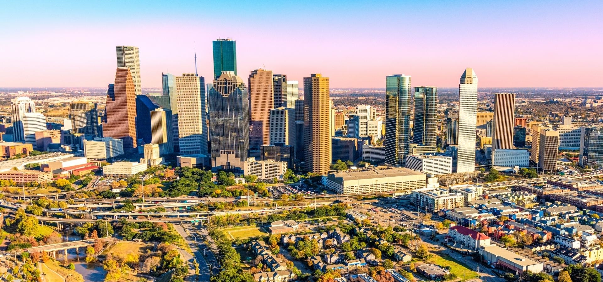

نعم يا صديقي انني اعيش في مدينه هيوستن وانها ثاني اكبر مدينة في الوايا المتحده, من حيث المنكقه انها جيده جدا ومنازلها ليست باهضه الاسعار, ومدارسها تحتوي على٠ ١ نجوم مما يدل انها مدارس ممتازة, وايضا هناك الكثير من المراكز الرياضيه القريبه من المنزل, حيث انك لن تحتاج لسياره لذهاي الى مركز رياضي.
